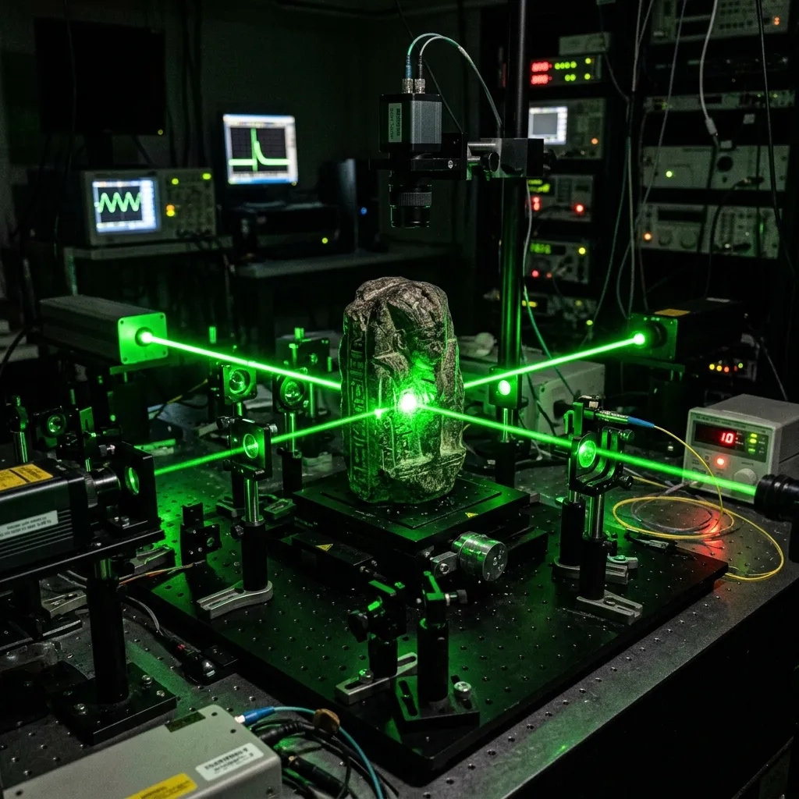
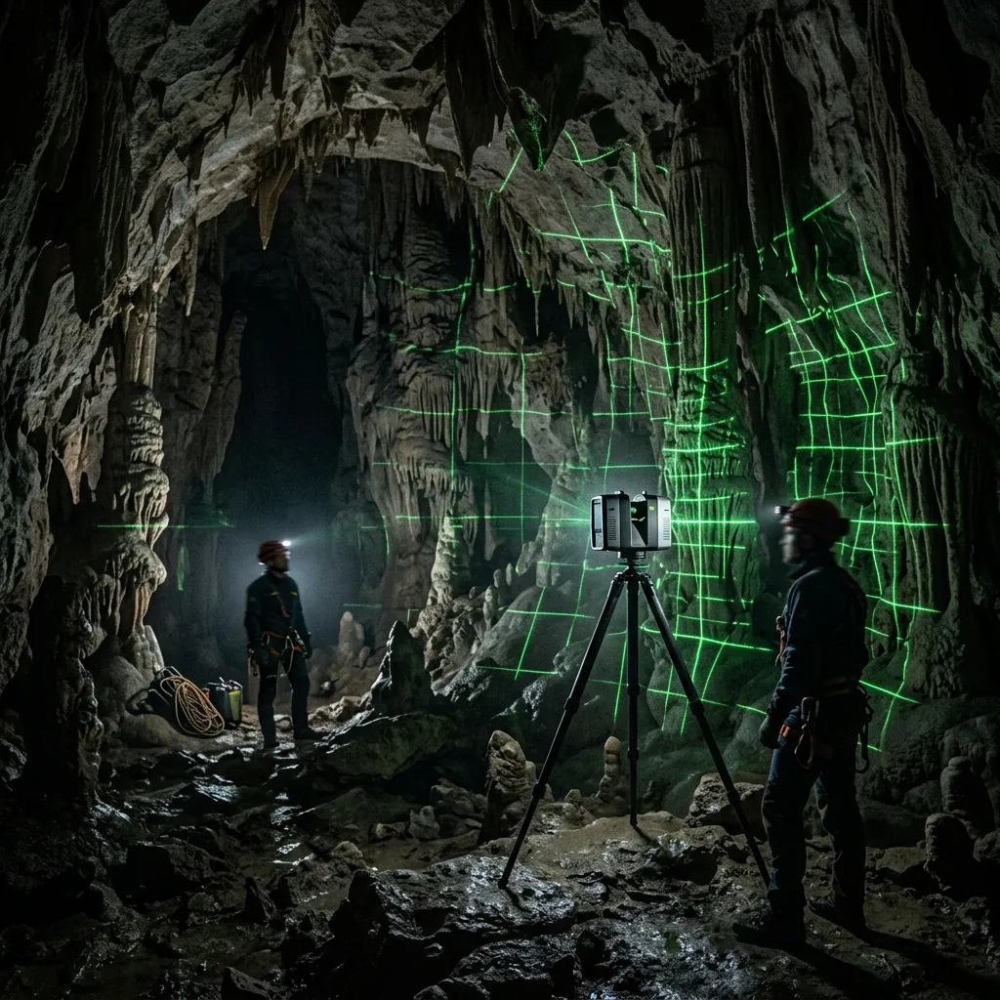

Reconstructing Prehistoric Acoustic Resonances Through Non-Contact Laser Interferometry.
Sterile laboratory restoration of lithic soundscapes and ancient resonant minerals for forensic organological archives.
Physical percussion of friable archaeological stone artifacts risks catastrophic micro-fracturing and irreversible crystalline degradation. We eliminate mechanical contact entirely by measuring sub-nanometre surface displacement under ambient atmospheric excitation using dual-beam laser doppler vibrometry. Operating from Sterkfontein, our laboratory reconstructs the exact acoustic profiles of prehistoric lithophones and cavernous chambers, preserving extinct auditory heritage in sterile digital wave-field matrices.
Access Waveform Repository
Quantitative Wave-Field Extraction Without Physical Excitation.
Conventional organological examination relies on physical strike testing, subjecting delicate quartzites and metamorphosed limestones to mechanical impacts that alter their internal lattice structure over time. In ancient resonant artifacts, microscopic fissures created during millennia of subterranean burial act as stress concentrators; even a soft felt mallet can propagate micro-fractures through crystalline boundaries. Our non-contact optical elastography protocol replaces physical impact with controlled white-noise atmospheric acoustic pressure held at sixty-five decibels SPL.
As ambient sound waves interact with the mineral sample inside a vacuum-isolated testing chamber, two 532-nanometre laser beams scan the artifact surface at a spatial density of ten thousand points per square centimetre. By measuring phase shifts in the reflected laser light, our interferometric sensors detect surface oscillations down to 0.04 nanometres. Custom finite-element algorithms process these Doppler displacement fields to calculate the exact fundamental frequencies, overtone decay rates, and modal nodal lines of the artifact, yielding a complete, un-damped acoustic reproduction without introducing a single joule of mechanical impact energy.
Clinical Palaeo-Acoustic Capabilities
The Sterkfontein laboratory offers precision scientific services tailored to the stringent demands of international archaeological institutions, museum curators, and academic preservation teams. Our methodology provides objective, non-invasive analytical services adhering to the strictest ISO-calibrated laboratory standards. This approach ensures that every microscopic resonance pattern is recorded without introducing foreign mechanical stresses to the original artifact, completely bypassing the hazards of conventional physical strike testing. Our facilities operate under rigorous environmental controls, managing ambient temperature, humidity, and subterranean background vibrations to guarantee a noise floor well below 15 dBA during critical scanning sessions.
We execute Non-Contact Lithophone Wave-Field Extraction to isolate the exact modal resonances of small-to-medium prehistoric lithic artifacts, mapping the acoustic decay of quartzites across a frequency range of 0.1 Hz to 96 kHz. This process detects surface oscillations down to 0.04 nanometres, providing an unprecedented view into the fundamental frequencies and overtone structures embedded within the mineral lattice. Our mobile field units also perform Speleothem Resonant Chamber Mapping, deploying wide-field interferometry inside subterranean spaces to establish the exact reverberation characteristics of ceremonial cave architecture. These deployments require multi-day calibration routines to account for ambient atmospheric pressure changes and internal drip-water acoustics. Finally, we provide Prehistoric Horn & Bone Acoustic Simulation, calculating the interior fluid dynamics of hollow organic artifacts without introducing moisture or physical mouthpieces, utilizing sub-millimetre spatial resolution to generate fully functional acoustic models.
Review Complete Diagnostic Protocol
Documented Wave-Field Restorations
Our analytical data and wave-field reconstructions serve as the empirical foundation for major acoustic archaeology publications. High-precision research deliverables generated in our Sterkfontein facility have been validated and incorporated by global museum curators seeking to archive fragile sonic histories. These case studies represent the intersection of optical physics and deep-time acoustic heritage, offering researchers an uncorrupted digital archive of sounds that have not resonated in open air for tens of thousands of years. We mandate that all recorded data is preserved in uncompressed, open-access formats to guarantee longevity and cross-institutional compatibility.
We recently completed the Sterkfontein Dolomite Resonant Shaft study, capturing the 45-second low-frequency reverberation tail of a 40-metre natural vertical fissure. This particular mapping required positioning three independent laser doppler vibrometers in complete darkness, synchronizing the data feeds over a proprietary fibre-optic network to eliminate electromagnetic interference. In our most comprehensive laboratory examination, we catalogued the Makapansgat Chert Cobble Harmonic Profile, isolating five distinct nodal frequencies from a 2.5-million-year-old naturally resonant stone, archived immediately as an uncompressed 192kHz 32-bit floating-point wave matrix. The findings demonstrated a surprising Q-factor density that challenged previous assumptions about early hominid percussive selection. Furthermore, our deployment to Namibia mapped the Brandberg Basalt Lithophone Array, extracting exact pitch relationships across seventeen individual strike points without ever making physical contact with the exposed rock face. This specific expedition successfully proved the viability of our mobile field-rigs in harsh, arid desert conditions.
Access Full Project ArchiveInitiate an Artifact Diagnostic Inquiry
Archaeological teams may request direct intake into our Sterkfontein laboratory console for the acoustic preservation of newly excavated lithic or organic sounding devices. We prioritize artifacts facing imminent structural degradation or those scheduled for permanent subterranean reburial. Please provide precise material specifications, estimated transportation logistics, and the required frequency resolution below. Our intake specialists will review the structural viability of the requested scan within forty-eight hours of submission.